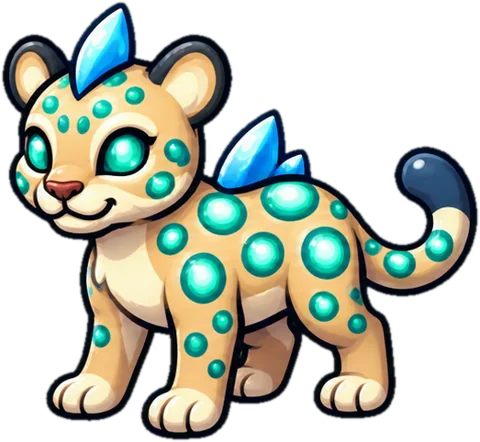

 Water
Water Electric
ElectricTap a stage to read its story.
Vylkit is an adorable spotted ocelot cub, its cream-and-teal coat dotted with ocean-blue spots, and small blue fin-spines trailing from its ears and shoulders. It pads along Coral Bay's shallows on soft paws, stopping to peer at its own reflection in tide pools with evident fascination. It learned early that staring long enough at still water eventually reveals a face in the ripples - a trick it teaches to any child who sits quietly beside it long enough.
Field note: Vylkit leaves a faint blue pawprint in the sand that glows for twenty minutes after sunset - bay children follow the prints to find where it has been.
Coral Bay. Vylkit and its family are found in the Coral Bay. See everyone who lives there.
Share a Bond Food that matches its types to become friends. Vylkit loves:
A Bond Food is not a trick. It joins your spirit with the Kimuro's spirit, and only when it chooses you.
Print the Kimuro adventure packs: mazes, cards, a board game and Bond Mark medals.
See the printable packs